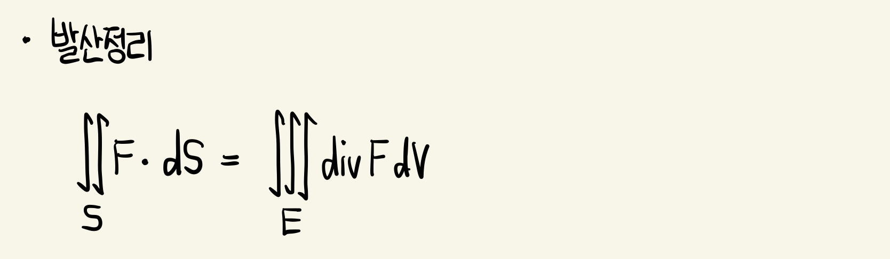

발산정리 (Divergence Theorem)
영역의 경계 위에서 원래함수 F의 적분과 영역 위에서 함수의 미분(div F)의 적분이 관계가 있음을 의미
S는 입체영역 E의 경계곡면
E는 경계곡면 S가 양(외부 쪽)의 방향을 갖는 단순입체 영역이라 하자. F는 그 성분함수들이 E를 포함하는 열린 영역상에서 연속인 편도함수를 갖는 벡터장이라 하자. 그러면 다음이 성립한다.

영역의 경계 위에서 원래함수 F의 적분과 영역 위에서 함수의 미분(div F)의 적분이 관계가 있음을 의미
S는 입체영역 E의 경계곡면
E는 경계곡면 S가 양(외부 쪽)의 방향을 갖는 단순입체 영역이라 하자. F는 그 성분함수들이 E를 포함하는 열린 영역상에서 연속인 편도함수를 갖는 벡터장이라 하자. 그러면 다음이 성립한다.
